专题6.1 数据的收集与整理（举一反三讲义）
【北师大版2024】

【题型1 定量数据、定性数据】 1
【题型2 普查与抽样调查】 2
【题型3 总体、个体、样本及样本容量】 3
【题型4 抽样调查的可靠性】 4
【题型5 用样本来推断总体】 5
【题型6 统计表】 5
【题型7 扇形统计图】 7
【题型8 条形统计图】 9
【题型9 折线统计图】 11
【题型10 频数分布表及相关概念】 13
【题型11 频数分布直方图】 14

知识点1 定量数据、定性数据
有的数据是用数值表示的，如学生的身高、体重、到校所用时间等，我们把这类数据称为定量数据；有的数据不是用数值表示的，如学生上学采用的交通方式、学生美术成绩（等级）等，我们把这类数据称为定性数据.
【题型1 定量数据、定性数据】
【例1】（24-25七年级上·山东济南·期末）某校八年级（2）班足球队部分队员的身高（单位：cm）如下：169，168，166，165，165，167，164，166，168，167，这组数据（ ）
A．是定性数据 B．既是定性数据又是定量数据
C．是定量数据 D．不确定
【变式1-1】数据划分成定量数据和定性数据两种，以下几种数据中，属于定性数据的是（ ）
A．性别 B．年龄
C．平均成绩 D．体重
【变式1-2】（24-25七年级上·山东青岛·期末）下列说法错误的是（ ）
A．青岛市的空气质量状况是定量数据 B．某学校学生近视的人数是定量数据
C．全班同学的上学交通方式是定性数据 D．某小区居民日平均用电量是定量数据
【变式1-3】（24-25六年级上·山东烟台·期末）下列数据：①10月1日某部电影的票房；②今天烟台开发区的空气质量；③你每天参加体育活动的时间；④你早餐是否有喝牛奶的习惯，是定量数据的有（ ）
A．①③ B．②④ C．①②③ D．①③④
知识点2 普查与抽样调查
普查 | 抽样调查 | |
概念 | 为特定目的而对所有考察对象作的全面调查叫做普查 | 为特定目的而对部分考察对象作的调查叫做抽样调查 |
优点 | 全面、准确 | 花费少、省时省力 |
缺点 | 花费多，耗时长，而且某些调查不宜进行普查 | 抽取的样本是否具有代表性，直接关系到对总体估计的准确程度 |
调查方式的选取 | 当要研究的问题对数据要求精确度较高时，应采用普查 | 当受客观条件限制（调查有破坏性、实际情况不允许等），无法对总体的所有个体进行调查时，应采用抽样调查 |
【题型2 普查与抽样调查】
【例2】（25-26八年级上·云南昆明·期中）下列统计调查中，适宜采用抽样调查的是（ ）
A．检查运载火箭各零部件的质量情况
B．调查某款新能源汽车的抗撞击能力
C．对乘坐飞机的乘客进行安检
D．企业招聘，对应聘人员进行面试
【变式2-1】下列调查中，最适合采用普查方式的是（ ）
A．调查重庆市辖区内长江流域水质情况
B．调查江北机场坐飞机的旅客是否携带违禁物品情况
C．调查我校学生的视力情况
D．调查重庆电视台“天天630”栏目收视率情况
【变式2-2】（24-25七年级上·全国·课后作业）对于下列调查，将你认为最适合的调查方式填在相应的横线上．
（1）调查某品牌手机的防水性能： ；
（2）审核一本书有没有知识性错误： ；
（3）调查全班同学对学校食堂伙食的满意度： ；
（4）调查我市小学生参加社会实践的意识： ；
（5）对乘坐飞机的乘客进行安检： ．
【变式2-3】（24-25八年级下·江苏宿迁·期中）下列调查：①调查一批灯泡的使用寿命；②调查全班同学的身高；③调查市场上某种食品的色素含量是否符合国家标准；④企业招聘，对应聘人员进行面试．其中适合抽样调查的是 （填序号）．
知识点3 总体、个体、样本及样本容量
1. 总体：所要考察的对象的全体叫做总体．
2. 个体：组成总体的每一个考察对象叫做个体．
3. 样本：从总体中取出的一部分个体叫做这个总体的一个样本．
4. 样本容量：一个样本包含的个体的数量叫做样本容量．
例如：为了解某地区八年级7000名学生的体重情况，从中抽查了500名学生的体重，就这个问题来说，7000名学生的体重是总体，每名学生的体重是个体，500名学生的体重是抽取的一个样本，样本容量是500．
【题型3 总体、个体、样本及样本容量】
【例3】（24-25七年级下·全国·单元测试）今年某市有4万名考生参加中考，为了了解这些考生的数学成绩，从中随机抽取2000名考生的数学成绩进行统计分析，在这个问题中：
（1）这属于 调查；
（2）总体是 ；
（3）个体是 ；
（4）样本是 ；
（5）总体容量是 ，样本容量是 ．
【变式3-1】（2025八年级上·全国·专题练习）为了了解某校七年级1000名学生的身高，从中随机抽取了100名学生进行测量，下列说法正确的是（ ）
A．1000名学生是总体 B．每名学生是个体
C．抽取的100名学生是一个样本 D．每名学生的身高是个体
【变式3-2】（24-25七年级下·山西阳泉·期末）春暖风清，书香氤氲．第四届全民阅读大会于2025年4月23日至25日在山西省太原市举办，主题为“培育读书风尚建设文化强国”．某校准备购进一批新书，为了解全校3000名学生所喜欢的图书种类，随机抽取了200名学生进行调查，则这项抽样调查的样本容量为 ．
【变式3-3】为了解某校七年级1000名学生期中数学考试情况，从中抽取了200名学生的数学成绩进行统计．下列判断：①这种调查方式是抽样调查：②1000名学生是总体：③每名学生的数学成绩是个体：④200名学生是总体的一个样本：⑤200名学生是样本容量．其中正确的判断有（ ）
A．1个 B．2个 C．3个 D．4个
【题型4 抽样调查的可靠性】
【例4】（24-25七年级上·安徽蚌埠·期末）以下收集数据的过程，说法错误的是（ ）
A．了解本班学生每周课外阅读时间采用全面调查更合适
B．旅客上飞机前的安检采用抽样调查最合理
C．为了解全乡果农的年收入情况，从中抽取50户进行调查，此次抽样的样本是这50户果农的年收入
D．班级联欢会上，主持人从全班同学中抽取3名颁发幸运奖，要使每名同学都有相等的中奖机会，应该采用简单随机抽样抽取
【变式4-1】（2025·河南驻马店·三模）为了解游客在郑州、开封和洛阳这三个城市旅游的满意度，下面四种收集数据的方案最合理的是（ ）
A．在郑州调查100名游客 B．在开封调查500名游客
C．在三个城市一共调查1000名游客 D．在三个城市各调查1000名游客
【变式4-2】（24-25七年级下·全国·单元测试）要想统计“本班学生最喜欢的动画片”，下列收集数据的方法中，比较合适的是（ ）
A．问卷调查 B．互联网查询 C．观察 D．查阅资料
【变式4-3】进行数据的收集调查时，在明确调查问题、设计调查选项、确定调查范围后一般还要完成以下4个步骤：①实施调查；②表示调查结果；③汇总调查数据；④选择调查方式，但它们的顺序弄乱了．正确的顺序是（ ）
A．④①③② B．③④①② C．④③①② D．②④③①
【题型5 用样本来推断总体】
【例5】（24-25九年级下·湖南永州·开学考试）某区养羊专业户为了估计农场中羊群的总数，他先从农场羊群中赶出100只羊，将每只羊作好记号后放回农场羊群中，当它们完全混合于羊群后，再从农场羊群中赶出30只羊，发现其中带记号的羊有5只，估计该农场里约有 只羊．
【变式5-1】一个池塘中放养一些草鱼若干，现想测算一下池塘中草鱼的总条数，小明在池塘中放入60条红鲫鱼，一周后，小明在池塘中捞出200条鱼中有5条是红鲫鱼，把鱼全部放回池塘中．请你猜测池塘中现在大约有 条草鱼．
【变式5-2】随机调查某小区10户家庭一周内使用环保方便袋的数量．得到数据如下（单位：只）：6，5，7，8，7，9，10，5，6，7，利用所得的数据估计该小区1500户家庭一周内需要环保方便袋约为（ ）
A．1500 B．10500 C．14000 D．15000
【变式5-3】为了让人们感受丢弃塑料袋对环境造成的影响，某班环保小组的6名同学记录了自己家中一周内丢弃塑料袋的数量，结果如下：（单位：个）33，25，28，26，25，31，如果该班有45名学生，那么根据提供的数据估计本周全班同学各家总共丢弃塑料袋的数量为（ ）
A．900个 B．1080个 C．1260个 D．1800个
【题型6 统计表】
【例6】小刚想买双好的运动鞋，于是他上网查找有关资料，得到下表：
颜色 | 价格(元) | 备注 | |
甲 | 红、白、蓝、灰 | 450 | 不宜在雨中穿 |
乙 | 淡黄、浅绿、白、黑 | 700 | 有很好的防水性 |
丙 | 灰、白蓝相间 | 350 | 较为防水 |
丁 | 浅绿、淡黄、白蓝相间 | 500 | 防水性很好 |
他想买一双价格在300～600元之间，白蓝相间、浅绿或淡黄色，并且防水性能很好的运动鞋，那么他应选( )
A．甲 B．乙 C．丙 D．丁
【变式6-1】（2024七年级上·全国·专题练习）下表是某校初一(7)班20名学生某次数学成绩的统计表：若这20名学生平均成绩为a(a是整数)，则a至少是 分．
成绩(分) | 60 | 70 | 80 | 90 | 100 |
人数(人) | 1 | 5 | x | y | 2 |
【变式6-2】（24-25七年级上·湖北荆州·期末）下表是某校七至九年级某月课外兴趣小组的活动时间统计表，其中各年级同一兴趣小组每次活动时间相同．（活动次数为自然数）
课外小组活动总时间/h | 文艺小组活动次数/次 | 科技小组活动次数/次 | |
七年级 | 12.5 | 4 | 3 |
八年级 | 11 | 4 | 2 |
九年级 | 7 | m | n |
则m+n= ．
【变式6-3】某班学生在颁奖大会上得知该班获得奖励的情况如下表：
项目 人数 级别 | 三好学生 | 优秀学生干部 | 优秀团员 |
市级 | 1 | 1 | 1 |
区级 | 3 | 2 | 2 |
校级 | 17 | 5 | 12 |
已知该班共有27人获得奖励（每位同学均可获得不同级别、不同类别多项奖励），其中只获得两项奖励的有13人，那么该班获得奖励最多的一位同学可能获得的奖励为（ ）
A．3项 B．4项 C．5项 D．6项
知识点4 扇形统计图
1. 扇形统计图：扇形统计图是用整个圆表示所研究的总体，圆内各个扇形表示组成总体的各个部分，扇形圆心角的大小反映出各个组成部分的数量占总体数量的百分比．
2. 扇形统计图相关概念及计算
（1）在扇形统计图中，每部分占总体的百分比等于该部分所对应的扇形的圆心角的度数与360°的比；
（2）扇形的圆心角的度数＝360°×百分比．
3. 扇形统计图的特点
（1）易于显示每组数据相对于总数的大小；
（2）不能清楚地表明每一个项目的具体数值．
4.制作扇形统计图的步骤：
（1）将数据分组整理，列出统计表；
（2）分别计算各部分在总体中所占的百分比；
（3）分别计算各部分相应扇形的圆心角的度数，扇形的圆心角的度数＝360°×百分比；
（4）用圆规画圆，利用量角器作出圆心角，从而把圆按百分比分成若干个扇形；
（5）分别将各部分所占百分比及相应的名称标注在扇形上，并填写标题．
【题型7 扇形统计图】
【例7】（24-25六年级下·上海·期中）某校六年级有学生400人，学校开设了不同类别的选修课，参加各类选修课的情况如图所示（每位学生只能参加一门选修课）．
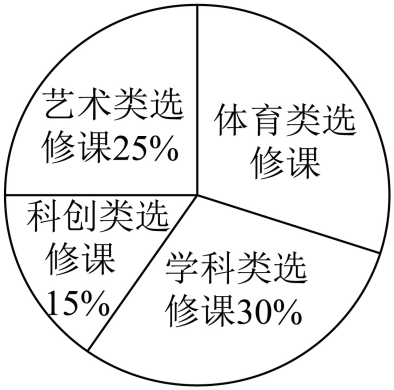
(1)参加体育类选修课的有________人；
(2)学科类选修课所在的扇形的圆心角是________度；
(3)参加科创类选修课的人数比参加艺术类选修课的人数少百分之几？
【变式7-1】（24-25七年级下·陕西西安·期末）某次安全知识测试后，张老师将某班同学的测试成绩按“90～100分为优秀，80～90分为良好，70～80分为较好，60～70分为及格”四个等级进行统计分析，并绘制了如图所示的统计图，则该班学生中“及格”等级所在扇形圆心角的度数为 ．
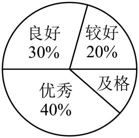
【变式7-2】（25-26九年级上·广西南宁·开学考试）根据下列两个扇形统计图，你能判断哪一所学校的男生人数多吗？答： （填“能”或“不能”）．
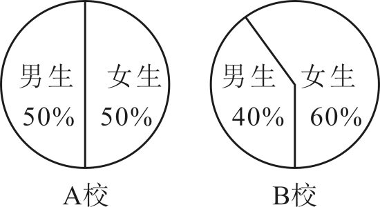
【变式7-3】（2025·云南·模拟预测）某学校准备为七年级学生开设美术与手工课程、音乐课程、设计课程、舞蹈课程、戏剧课程、影视课程共6门艺术类选修课，选取了部分学生进行了我最喜欢的一门选修课调查，将调查结果绘制成了如图所示的统计图表(不完整)．
选修课 | 美术与 手工课程 | 音乐 课程 | 设计 课程 | 舞蹈 课程 | 戏剧课程 | 影视课程 |
人数 |
| 40 |
| 50 | 20 |
|
这次调查的学生中，喜欢美术与手工课程的有（ ）
A．20人 B．30人 C．36人 D．50人
知识点5 条形统计图
1. 条形统计图
条形统计图是用宽度相同的条形的高低或长短来表示数据特征的统计图．
特点：（1）可以直观地反映出数据的数量特征；
（2）易于比较数据之间的差别．
2. 制作条形统计图的步骤
（1）根据统计资料整理数据；
（2）根据图纸的大小，画出两条互相垂直的射线；
（3）在水平射线上，适当分配条形的位置，确定直条的宽度和间隔；
（4）在与水平射线垂直的射线上，根据数据大小的总体情况，确定单位长度；
（5）按照数据，画出长短不同的直条，并注明数据，填写标题．
【题型8 条形统计图】
【例8】（24-25七年级下·全国·单元测试）随着科技的发展，远程办公APP成为企业内部沟通的重要工具，如图是三种远程办公APP在2024年3—7月的下载量统计图．下列说法正确的是（ ）
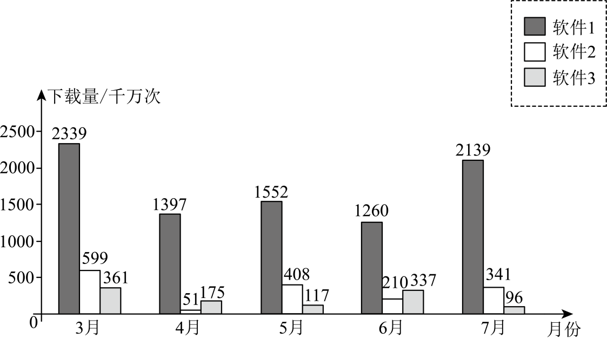
A．软件2在5月的下载量是4月的8倍
B．2024年3—7月，软件3每月的下载量稳居榜首
C．2024年5—6月，软件3的增长率低于100%
D．三种APP在7月的下载量之和约高于其他4个月
【变式8-1】（24-25七年级下·河南商丘·期末）某校计划组织一场研学活动，学生可根据自己的喜好从A．洛阳博物馆、B．二里头夏都遗址博物馆、C．周王城天子驾六博物馆、D．龙门石窟、E．隋唐洛阳城遗址五个地点中选择一个参加．为了合理规划研学活动，学校设计了研学方案，随机抽取了该校120名学生，统计了他们选择的地点，绘制了条形统计图（如图）．若该校共有1600人，则该校选择到C．周王城天子驾六博物馆参加研学活动的学生大约有 人．
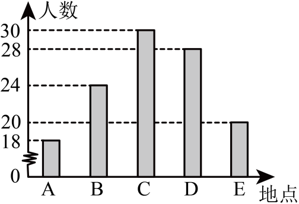
【变式8-2】（2025·湖北·模拟预测）安全使用电瓶车可以大幅度减少因交通事故引发的人身伤害，为此交警部门在全市范围开展了安全使用电瓶车专项宣传活动.在活动前和活动后分别随机抽取了部分使用电瓶车的市民，就骑电瓶车戴安全头盔情况进行问卷调查，将收集的数据制成如下统计图表．
活动前骑电瓶车戴安全头盔情况统计表
类别 | 人数 |
A | 69 |
B | a |
C | 510 |
D | 177 |
合计 | 1000 |
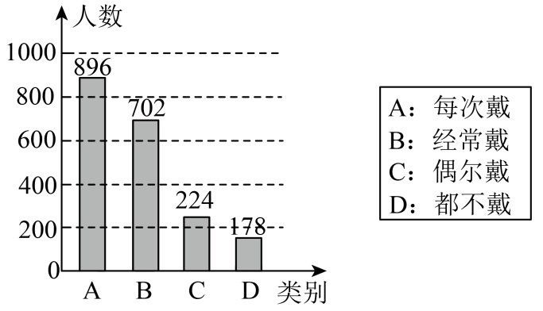
(1)计算“活动前骑电瓶车戴安全头盔情况统计表”中，B类别对应人数a的值；
(2)如果让你制作一个统计图，使它能够直观反映A，B，C，D各类别所占的百分比，你认为应该选择哪种统计图？
(3)若该市约有20万人使用电瓶车，估计活动后全市骑电瓶车“都不戴”安全头盔的总人数；
(4)小明认为，宣传活动后骑电瓶车“都不戴”安全头盔的人数为178，比活动前增加了1人，因此交警部门开展的宣传活动没有效果．小明分析数据的方法是否合理？请结合统计图表，对小明分析数据的方法及交警部门宣传活动的效果谈谈你的看法．
【变式8-3】（25-26八年级上·重庆九龙坡·阶段练习）运动是一切生命的源泉，运动使人健康、使人聪明、使人快乐，运动不仅能改变人的体质，更能改变人的品格．某初级中学为了解学生一周在家运动时长t（单位：小时）的情况，从本校学生中随机抽取了部分学生进行问卷调查，并将收集到的数据整理分析，共分为四组A.t<1,B.1≤t<2,C.2≤t<3,D.3≤t<4绘制了如下两幅不完整的统计图．根据调查知每周在家运动时间低于3小时的人数占总人数的90%．根据以上信息，解答下列问题：
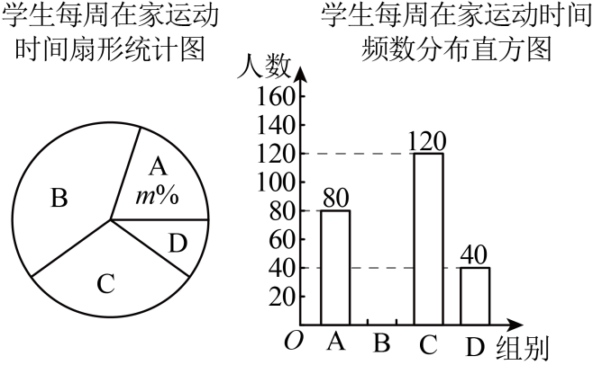
(1)参与此次调查的学生有___________人，请补全条形统计图；
(2)m=___________，扇形统计图中B组对应的扇形的圆心角度数为___________．
(3)若初二年级学生共有1800人，根据本次调查结果，试估计该校初二学生一周在家运动时长不足2小时的人数．
知识点6 折线统计图
1. 折线统计图
折线统计图是用折线表示数量变化规律的统计图．
特点：（1）能清楚地反映事物的变化情况；（2）易于显示数据的变化趋势．
2. 绘制折线统计图的步骤
（1）根据统计资料整理数据；
（2）先画纵轴，后画横轴，纵、横轴都要有单位，按纸面的大小来确定用一定单位表示一定的数量；
（3）根据数量的多少，在纵、横轴的恰当位置描出各点，然后把各点用线段按顺序连接起来．
3. 绘制统计图的注意事项
1. 绘制统计图时纵轴要从0开始；
2. 纵轴上的单位长度要统一；
3. 选择合适的统计图进行描述．
【题型9 折线统计图】
【例9】（25-26八年级上·北京·期中）下面的统计图反映了我国邮电业务（含邮政业务与电信业务）总量的情况．根据统计图提供的信息，下列有关我国邮电业务总量推断不合理的是（ ）
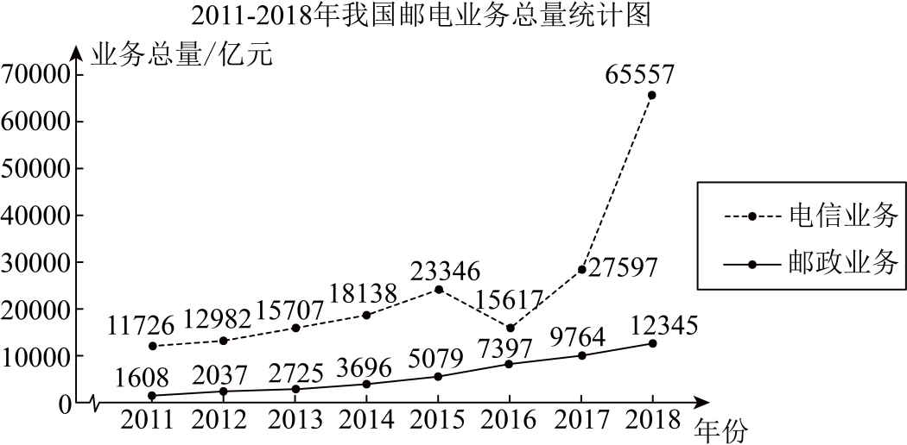
A．2018年，电信业务总量比邮政业务总量的5倍还多
B．2011−2018年，邮政业务总量与电信业务总量都是逐年增长的
C．与2017年相比，2018年邮政业务总量的增长率超过20%
D．2011−2018年，电信业务总量年增长的平均值大于邮政业务总量年增长的平均值
【变式9-1】（24-25八年级下·河北唐山·期末）如图是某班学生一周参加体育锻炼情况的折线统计图，则一周参加体育锻炼时间中人数最多的锻炼时间是 小时．

【变式9-2】（24-25七年级上·河南郑州·开学考试）【统计图】甲、乙两家汽车销售公司根据近几年的销售量分别制作如图统计图：
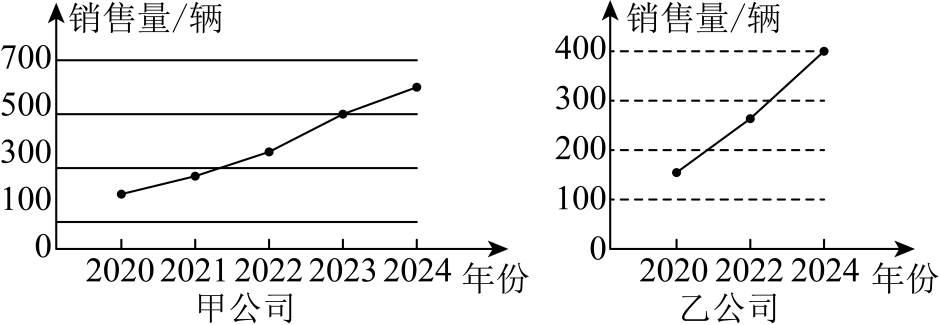
从2020年到2024年，这两家公司中销售量增长较快的是 公司．（填“甲”或“乙”）
【变式9-3】（2025·江苏盐城·中考真题）6月6日是“全国爱眼日”．小明在报纸上看到某市疾控中心发布的中学生近视情况统计数据，如图（1）．
(1)图（1）中的数据是从全市30所中学随机抽取的部分学生视力筛查的结果．
①疾控中心收集数据，采用的调查方式是________；（填“普查”或“抽样调查”）
②根据统计图，请你分析近视率随年级升高的变化趋势．
(2)小明想了解“影响视力的主要因素”，对全校近视的985名学生进行问卷调查．问卷中设置了五个主要因素：A．不认真做眼保健操；B．长时间连续用眼；C．课间只在教室休息；D．饮食不均衡；E．睡眠时间不足．他绘制了如图（2）所示的条形统计图．
①从图（2）中可知，影响视力的最主要因素是_________．（填选项代号）
②结合上述统计数据，请你谈一谈如何预防近视．
知识点7 频数分布表及相关概念
1. 组距：把所有数据分成若干组，每个小组的两个端点间的距离（组内数据的取值范围）称为组距．
2. 组数：分成组的个数叫做组数．
3. 频数：对落在各个小组内的数据进行累计，得到各个小组内的数据的个数叫做频数．
4. 频数分布表：把各个类别及其对应的频数用表格的形式表示出来，所得的表格就是频数分布表．
【题型10 频数分布表及相关概念】
【例10】（24-25八年级下·江苏泰州·阶段练习）小明统计了他家今年5月份打电话的次数及通话时间，并列出了频数分布表：
通话时间xmin | 0<x≤5 | 5<x≤10 | 10<x≤15 | 15<x≤20 | 20<x≤25 |
频数（通话次数） | 14 | 16 | 8 | 10 | 2 |
则通话时间不超过10min的频率是（ ）
A．0.2 B．0.4 C．0.6 D．0.8
【变式10-1】（24-25七年级下·四川广元·期末）一个容量为80的样本的最大值为147，最小值为50，取组距为10，则可以分成（ ）
A．10组 B．9组 C．8组 D．7组
【变式10-2】（24-25八年级下·河北唐山·期中）现将50个数据分成了①-⑥组，如下表所示，则第⑤组的频率为 ．
组号 | ① | ② | ③ | ④ | ⑤ | ⑥ |
频数 | 3 | 5 | 8 | 12 | 5 |
【变式10-3】（2025·北京顺义·二模）某校组织全校学生参加主题为“百年五四与当代科技”的知识竞赛．为了解学生的竞赛情况，从中随机抽取了100名学生的成绩（百分制），数据整理如下：
成绩 | x<70 | 70≤x<80 | 80≤x<90 | 90≤x<95 | 95≤x≤100 |
人数 | 10 | 15 | 25 | 30 | 20 |
根据以上数据，估计全校1000名学生中成绩不低于80分的人数为 人．
知识点8 频数分布直方图
1. 频数分布直方图：根据频数分布表画出的统计图，称为频数分布直方图．
2. 频数分布直方图的绘制步骤
（1）算：计算最大值与最小值的差；
（2）定：决定距离与组数；
（3）列：确定分点，列出频数分布表；
（4）画：用横轴表示各分段数据，纵轴反映各分段数据的频数，小长方形的高表示频数，绘制频数分布直方图．
【题型11 频数分布直方图】
【例11】（25-26八年级上·海南省直辖县级单位·期中）“地球一小时”是世界自然基金会应对全球气候变化所提出的一项全球性节能活动，提倡于每年三月最后一个星期六的当地时间20:30，家庭及商业用户关上不必要的电灯及耗电产品一小时，以此来表示他们对于应对气候变化行动的支持，为了解小区居民的用电情况，某小区物业随机抽取了部分家庭72小时的用电情况，并整理成如下不完整的频数分布表和频数分布直方图．
居民用电情况频数分布表
组别 | 用电量／度 | 频数（户数） | 百分比 |
A | x≤12.0 | 2 | 5% |
B | 12.0<x≤15.0 | m | 10% |
C | 15.0<x≤18.0 | 12 | a |
D | 18.0<x≤21.0 | 14 | 35% |
E | x>21.0 | n | 20% |

请根据图表提供的信息，解答下列问题：
(1)调查总户数为______；
(2)频数分布表中，a=______，m=______，n=______；
(3)为了响应节能减排号召，请提一条合理的建议．
【变式11-1】为了了解某地七年级学生参加消防知识竞赛的成绩（成绩取整数），从中抽取了1%的学生的竞赛成绩，整理后绘制了如图所示的频数直方图．若竞赛成绩在90分及以上的学生可以获得奖励，则估计该地获得奖励的七年级学生有 人．
【变式11-2】（2025·湖南邵阳·模拟预测）为了了解八年级学生的体能情况，学校随机抽查了其中30名学生，测试1分钟仰卧起坐的次数，整理数据并将其绘制成如图所示的频数分布直方图，那么仰卧起坐的次数在25∼35的人数占抽查总人数的百分比是 ．（保留三位有效数字）
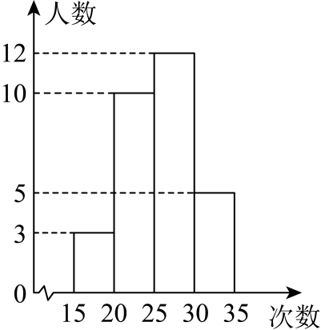
【变式11-3】（25-26九年级上·河北石家庄·开学考试）某次数学测验，抽取部分同学的成绩（得分为整数）整理制成统计图如图所示，根据图中信息，下列描述不正确的是（ ）
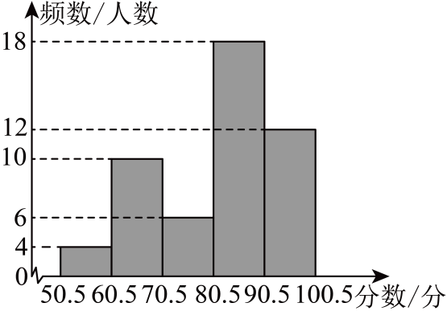
A．共抽取了50人
B．估计这次测验的及格率（60分及以上为及格）在92%左右
C．估计这次测试80分以上的同学占60%左右
D．60.5～70.5分这一分数段的频数是12